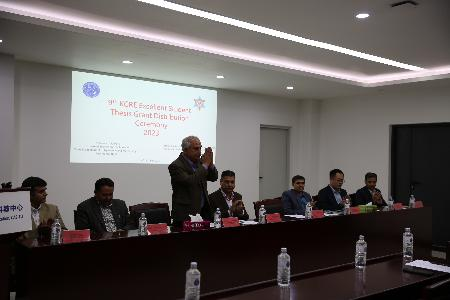
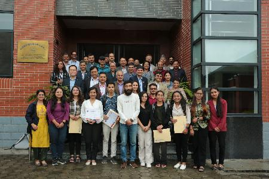

Tribhuvan
University, Central Department of Hydrology and Meteorology and Kathmandu Center for Research and Education
(KCRE,CAS-TU) Jointly organized a KCRE Excellent Student Thesis Grant Distribution Ceremony 2023 to honor 13
postgraduate students pursuing higher studies in various departments and campuses under the Institute
of Science and Technology, Tribhuvan University.
In 2014, an agreement was reached between Tribhuvan University and the
Chinese Academy of Sciences (CAS) to provide Grants to students who study in various campuses,
including the Central Department, under the grant. So far, 130 students have received this Grants . Awardees
Students are Anjuli Mulmi of Central Department of Environmental Science, Swekshya Thapa Magar of
Central Department of Food Technology, Rojina Pandey of Central Department of Bio-Technology, Sonia Joshi of
Central Department of Chemistry, Sita Khadka Central Department of Chemistry, Sagar Pandey
Central Department of Physics, Sandesh Thakuri of Central Department of Mathematics, Anju Karmacharya of
Central Department of Zoology, Srisa Rijal of Central Department of Statistics, Laxmi Poudel of
Central Department of Microbiology, Nagesh Rijal of Central Department of Geology, Binika Mathya of Central
Department of Botany, Smiriti Adhikari Central Department of Hydrology and Meteorology .
Prof.Dr.Shiva Lal Bhusal, Rector of Tribhuva University expressed
his hope that these outstanding scientific students would enhance the university's prestige and continue to
excel in their future endeavors.
Prof. Dr. Binil Aryal, Dean of the Institute of Science and Technology,
emphasized that the Chinese Academy of Sciences (CAS) is an institution that produces outstanding
scientists worldwide and contributes to the development and quality of science education in Nepal. He also
mentioned that in the coming days, Tribhuvan University and CAS will collaborate with international
educational institutions to provide various forms of financial and academic support to the Nepalese
students.
Prof.Dr. Deepak Aryal, Head of the Central Department of Hydrology and
Meteorology, extended his best wishes to all students, expressing the need for financial support from
various sources to inspire students in their research endeavors.
Dr. Binod Dawadi, Associate Professor in the Central Department of
Hydrology and Meteorology and Deputy Director of Kathmandu Center for Research and Education (KCRE)
gave a welcome speech and highlighted the historical development of this KCRE Excellent Student Thesis
Grant. According to him students will receive a reward of NPR 48,000 out of the total NPR 80,000 for their
research work, which is 60% of the total amount, and the remaining 20% for research work to be completed
within 9 months as per the recommendation of the relevant department. After publishing research articles in
national and international journals within 2 years, the remaining 20% will be provided as per the rule.
During this Award Ceremony, Prof.Dr. Bir Bahadur Khanal, Dean, Inistiture of Foresty, Dr.Surendra
Gautam, Assistant Dean of the Institute of Science and Technology, and Mr. Bishnu Prasad Khanal, Executive
Director of Monitoring Directorate, Dr Tianli Xu, Deputy Director of KCRE were present along with various
Heads of Central Departments under the Institute of Science and Technology including Awardees's
Students Thesis Supervisor.

Awarding site

group photo